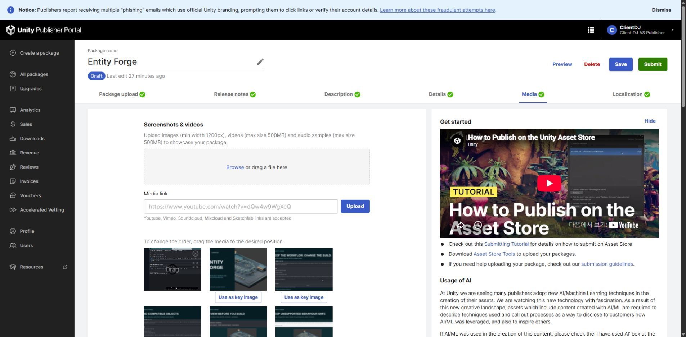
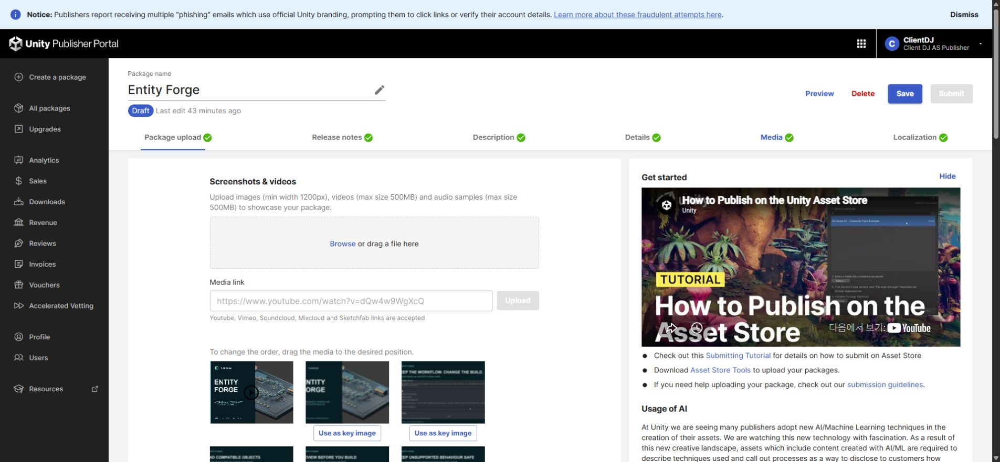
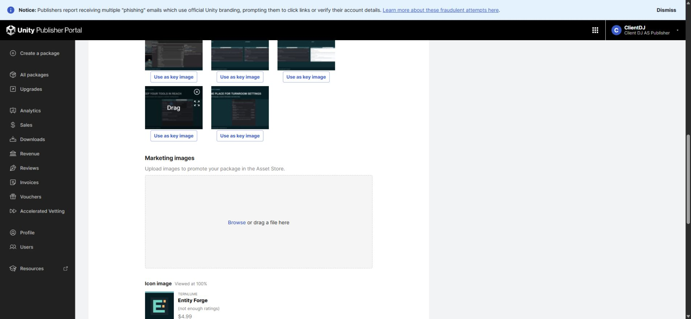

Tracefolio REPORTS & ISSUES
Tracefolio REPORTS & ISSUESEntity Forge 판매 영상·갤러리 교체 및 저장 검증
검증 대기새 영상과 갤러리 16장·키 이미지 3개를 포털에 적용하고 새로고침으로 저장을 확인했습니다. 직접 청취는 미실행입니다.
작업 결과
Entity Forge 판매 미디어 교체를 적용했습니다. 영상 1개가 첫 항목이며 이미지 16장과 키 이미지 3개가 저장되었습니다. 가격을 유지했고 Submit은 실행하지 않았습니다.


변경 내용
적용 내용
기존 정적 설정 구간을 정리하고 기능·의존성·샘플 소개로 편집했습니다. 기존 플레이어 녹화는 현재 버전 성능 측정이 아니라는 자막을 표시했습니다.
기존 실제 녹화로 새 편집본을 만들었습니다. 이번 작업에서 Unity를 새로 녹화하지 않았습니다.

검증
네 제품의 새 페이지에서 각각 영상 1개·갤러리 16개·키 이미지 3개·업로드 대기 0을 확인했습니다. 포털 영상의 재생과 포스터를 확인했습니다. 최종 영상 전체 디코드·검은 구간·음량을 검사했습니다. DDT/Pixora/Pixel Camera는 약 -21.05 LUFS, -2.07 dBTP, Entity Forge는 -20.92 LUFS, -4.04 dBTP입니다. 실제 Affinity 원본을 저장·닫기·다시 열어 이번 최종 40개 출력의 크기와 픽셀 체크섬 일치를 확인했습니다.
남은 사항
소리의 직접 청취는 이 세션의 오디오 입력 미지원으로 실행하지 못했습니다. 신호 검사 통과를 청취 통과로 처리하지 않았으며 최종 제출은 보류했습니다. Entity Forge의 기존 녹화는 현재 버전 성능 검증 자료가 아닙니다.
교훈 검토: 기존 전역의 원본·실행 대조 규칙과 중복되므로 전역 변경은 없습니다. 프로젝트 ProductReleaseChecklist에는 슬롯 수만으로 통과하지 않고 포스터·최신 로고·패딩·실제 음원까지 대조하도록 구체화했습니다.
작업 시간
- 제안 시간: 최초 조사 10~20분, 이후 마지막 검증·공개 약10분 추가 예상. 실제 작업은 예상보다 지연되었습니다.
- 실제로 완료된 시간: 2026-11-03 03:16:50 KST 시작. 포털 최종 저장 확인 04:33 KST, 원본 재열기 검증 확인 04:37 KST. 약80분 경과 시점의 기록이며 공개 배포 시각은 채팅에서 별도 확인합니다.
- XERJ: 실패 — XERJ 노드 미실행 확인. 필요한 소스는 rg, 미디어는 실제 원본과 포털로 대조했습니다.